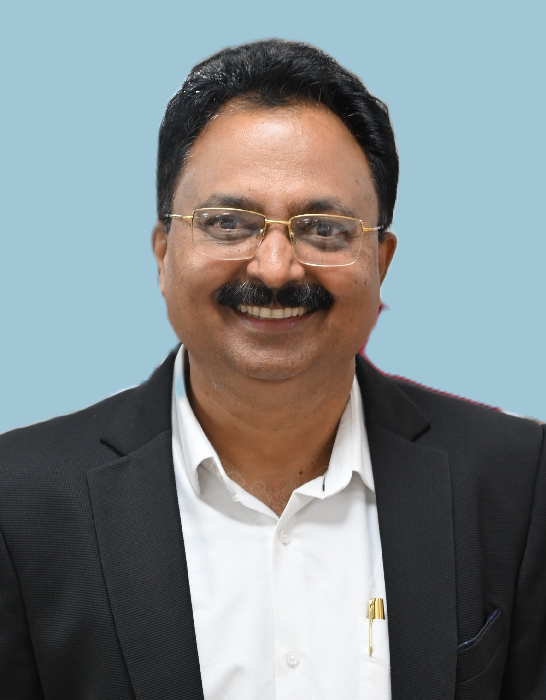

Shri.Kailas Dakhale
An engineer by education and an able Administrator by of more than 30 Years, Shri Kailas N. Dakhale, is giving his contribution to the Central Autonomous Bodies (CABs) like Indian Institute of Technology, Kanpur, Visvesvaraya National Institute of Technology, Nagpur and Indian Institute of Information Technology, Nagpur since last two decades.
He is having vast experience of administration of Higher Educational Institutions functioning under Ministry of Education, Government of India. His expertise in identification of the crux of the various issues related to Academic and Administrative Matters of the Higher Educational Institutions and providing quick solutions have received accolades on a number of occasions.
He has worked in Stores Purchase, Personnel Administration & Establishment, Estate Management, DOSA, Training & Placement, Hostel Management, Academic and Examinations Departments of CABs and has handled all the matters related to planning & execution of institute management policies including liaisoning with Central / State Government Authorities and also Industry.
After serving IIT, Kanpur for 14 Years in various Departments, Shri Kailas N. Dakhale left the IIT as Deputy Registrar and joined VNIT, Nagpur where he served as Joint Registrar. He was associated with VNIT for about 5 Years wherein he was recognized as an effective communicator with excellent relationship and interpersonal skills. He has also worked in Industry for about 7 years and has handled various matters related to Industrial Workers.
Later, he got associated with Indian Institute of Information Technology, Nagpur as I/c Registrar and subsequently joined this “Institution of National Importance” as Registrar with effect from 7th October 2020.
He has also contributed and is still contributing to the management of the Higher Educational Institutions as Member of various Selection Committees, Review Committees and Scrutiny Committees of IIT Kanpur, IIT Jodhpur, IIT Gandhinagar, IISER Bhopal, IIPR Kanpur, Central University, Hyderabad, Central University, Sagar, Rajiv Gandhi Institute of Petroleum Technology (RGIPT), Amethi, Mahatma Gandhi Antarrashtriya Hindi VishwaVidyalaya Wardha, Central University of Rajasthan, SVNIT, Surat, MNLU, Nagpur etc.
Shri Kailas N. Dakhale has also contributed in establishment of Indian Institute of Information Technology, Design & Manufacturing (IIITDM), Jabalpur and Indian Institute of Technology (IIT), Jodhpur